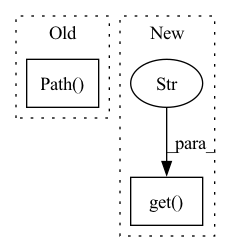

Pattern ID :19577
Before Change
res_img, res_json = app.infer(request=request)
if res_img:
file_ext = "".join(pathlib.Path( res_img) .suffixes)
result_image = os.path.join(args.output, "label_" + args.model + file_ext)
shutil.move(res_img, result_image)After Change
response = app.infer(request=request)
res_img = response.get("label")
res_json = response.get("params" )
if res_img:
result_image = args.output
print(f"Move: {res_img} => {result_image}")
shutil.move(res_img, result_image)In pattern: SUPERPATTERN
Frequency: 3
Non-data size: 2
Instances Fragment ID: 63941604
Project Name: project-monai/monailabel
Commit Name: 0176c2a31d386a5341e9326a872650fd8bac417e
Time: 2021-05-06
Author: sachidanand.alle@gmail.com
File Name: monailabel/interfaces/test.py
M Class Name: AnonimousClass
N Class Name: AnonimousClass
M Method Name: test_inference(1)
N Method Name: test_inference(1)
M Parent Class:
N Parent Class:
M File Name: monailabel/interfaces/test.py
N File Name: monailabel/interfaces/test.py
M Start Line: 18
M End Line: 37
N Start Line: 18
N End Line: 33
Before Change
import rosbag
self.rosbag_module = rosbag
self.rosbag_path = pathlib.Path( self.config["rosbag_path"])
self.rosbag_topics = ["/elevation_mapping/elevation_map_recordable"]
self.split_config = self.config.get("split")
assert list(self.split_config.keys()) == ["train", "val", "test"]After Change
import rosbag
self.rosbag_module = rosbag
self.rosbag_paths = self.config.get("rosbag_paths" , [])
self.rosbag_topics = ["/elevation_mapping/elevation_map_recordable"]
self.split_config = self.config.get("split")
assert list(self.split_config.keys()) == ["train", "val", "test"] Fragment ID: 63941602
Project Name: mstoelzle/solving-occlusion
Commit Name: 6ca3a5ce9f8295ca1d3bdfb029dc975b6f247b32
Time: 2021-01-27
Author: maximilian@stoelzle.ch
File Name: src/dataset_generation/anybotics_rosbag_dataset_generator.py
M Class Name: AnyboticsRosbagDatasetGenerator
N Class Name: AnyboticsRosbagDatasetGenerator
M Method Name: __init__(1)
N Method Name: __init__(1)
M Parent Class: BaseDatasetGenerator
N Parent Class: BaseDatasetGenerator
M File Name: src/dataset_generation/anybotics_rosbag_dataset_generator.py
N File Name: src/dataset_generation/anybotics_rosbag_dataset_generator.py
M Start Line: 20
M End Line: 27
N Start Line: 21
N End Line: 28
Before Change
if manager or rank == 0:
// In a distributed training job the manager should monitor the chief
// trials logs and ignore all other trials.
return pathlib.Path( "/", "tmp", "tensorboard")
return pathlib.Path("/", "tmp", f"tensorboard-{rank}")
After Change
def get_base_path(checkpoint_config: Dict[str, Any]) -> pathlib.Path:
allocation_id = os.environ.get( "DET_ALLOCATION_ID", "" )
rank = get_rank_if_horovod_process_else_return_zero()
if checkpoint_config.get("base_path"):
base_path = pathlib.Path(checkpoint_config["base_path"]) Fragment ID: 63941601
Project Name: determined-ai/determined
Commit Name: 49966efa5fea936d03630d0deb3251f908b5c3e6
Time: 2022-06-14
Author: maksim.kouznetsov@hpe.com
File Name: harness/determined/tensorboard/build.py
M Class Name: AnonimousClass
N Class Name: AnonimousClass
M Method Name: get_base_path(1)
N Method Name: get_base_path(2)
M Parent Class:
N Parent Class:
M File Name: harness/determined/tensorboard/build.py
N File Name: harness/determined/tensorboard/build.py
M Start Line: 30
M End Line: 41
N Start Line: 30
N End Line: 39